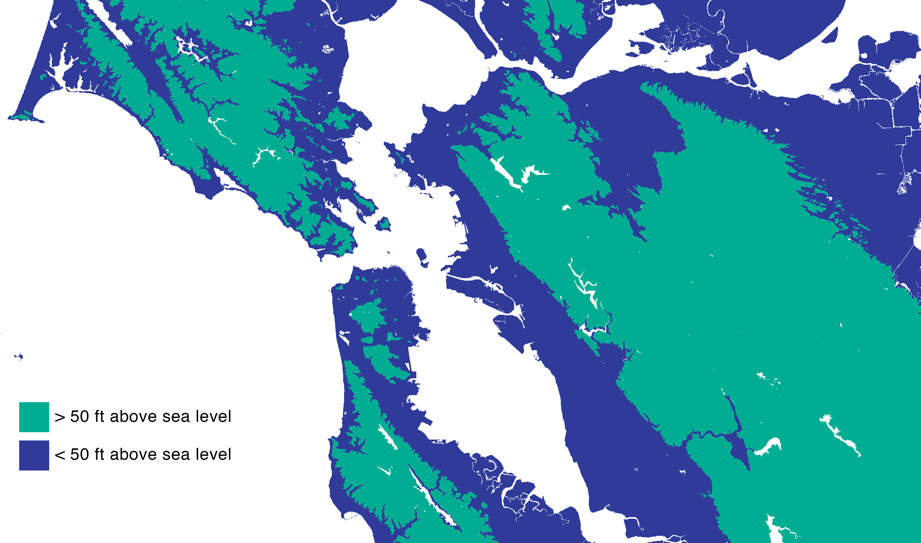
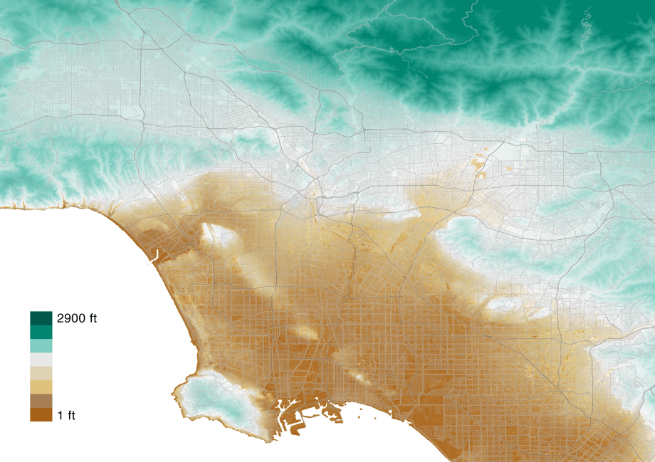
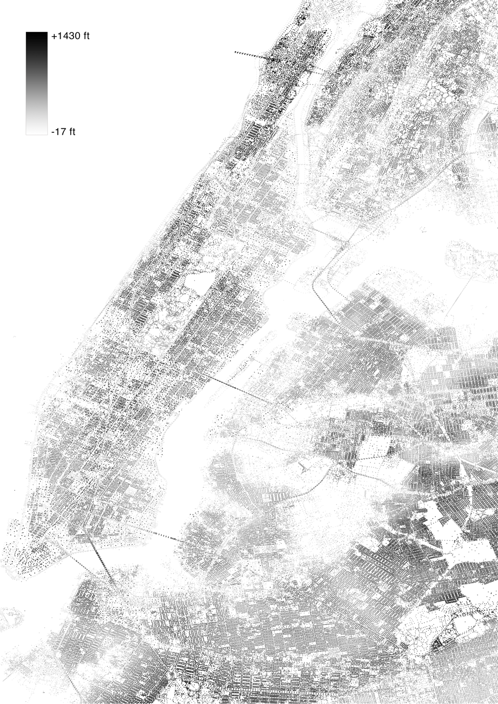

Elevation
This trio of maps I made for an article that I wrote about the geopolitics of "the hills." Each map is another way to show elevation. The first splits the area in two groups given an arbitrary elevation. The second is a digital elevation model taken from aerial imagery. The third is a representation of terrain by point.